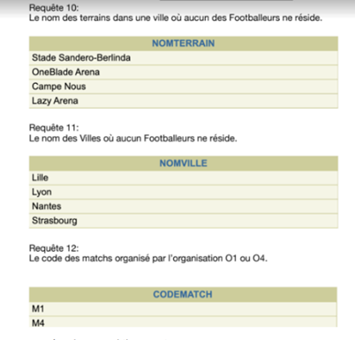
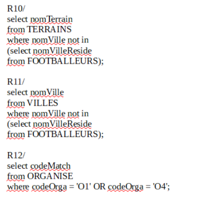
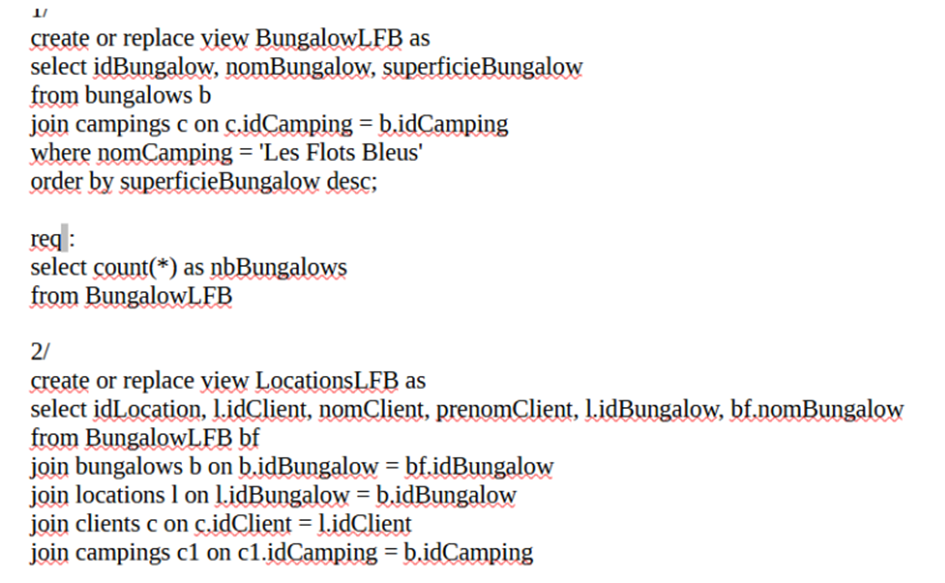
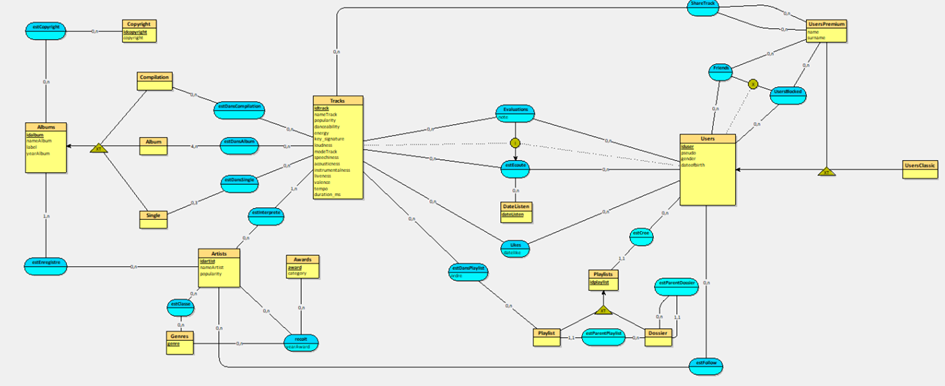
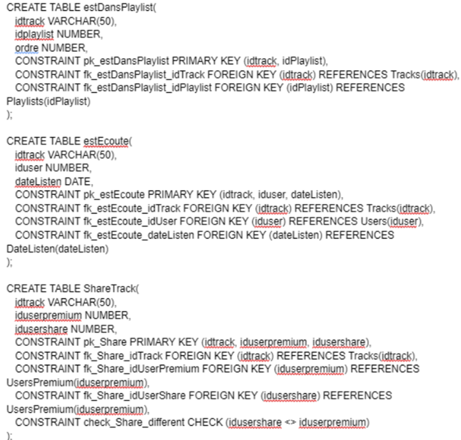
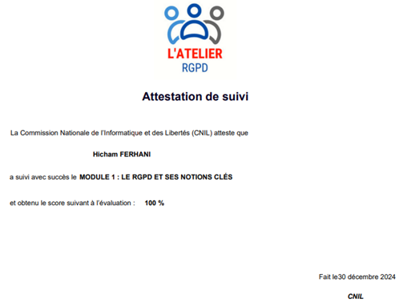
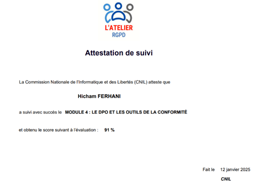
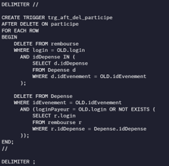

Dans les deux premiers semestres, nous avons appris en base de données à interroger, mettre à jour et à modifier une base de données relationnelle avec de nombreuses commandes en sql sur oracle (AC1) en cherchant une donnée précise en utilisant des clauses SQL tel que « Select, Where, from, having, group by ».
Nous avons aussi appris à visualiser les différents schémas/diagrammes qui contiennent plusieurs données (AC2) et avons aussi conçu des schémas relationnelles ainsi que des diagrammes à partir de consignes données par notre professeur lors d’une SAE de BDD (AC3).
Trace 1 :
 Trace 2 : Un ensemble de requêtes permettant de créer des vues pour ainsi montrer les informations que l’on veut pour une question de sécurité. Dans la première requête, j’ai créé une vue “BungalowLFB” qui nous permettait d’avoir seulement les informations des bungalows qui se trouvent dans le camping “Les Flots Bleus”. Dans la deuxième requête, la vue “LocationsLFB” contient les locations de tous les clients ainsi que le bungalow dans lequel ils se trouvent. (AC1)
Au second semestre, nous avons eu un “cahier des charges” sur une base de données Spotify (avec des morceaux, playlists, albums, utilisateurs...) où se trouvait l’explication de chaque table, ce qu’elle contenait, et les différents paramètres. Nous avons pour cela réalisé un diagramme entité-association pour représenter la structure de la BD, nous avons ensuite réalisé un schéma relationnel, créé le script de création des tables ainsi que l’insertion des données dans les différentes tables.
Trace 3 : Schéma relationnel
Trace 4 : Extrait script de la création des tables avec les contraintes et les colonnes.

Nous avons, au 3ème semestre, réalisé l’atelier RGPD, qui sert à sensibiliser et former les participants à la protection des données personnelles dans le cadre légal européen. J’ai de ce fait réalisé 4 ateliers, et obtenu pour chacune la certification de réussite.
Ces ateliers ont été très utiles car j’ai pu découvrir en profondeur le monde de la donnée, le consentement derrière la récolte d’information, comment sécuriser les bases de données, anonymiser les informations nécessaires, ne pas stocker les mots de passe en clair dans la base de données ainsi qu’à réfléchir à la durée de conservation des données. C’est grâce à ces ateliers que nous avons pu mener à bien notre SAE du 3ème semestre portant sur une application de gestion de poursuite d’étude.
Trace 5 : Certificats des ateliers RGPD
 Durant le 3ème semestre, nous avons appris le PL/SQL, permettant d’écrire des programmes complexes tels que triggers, fonctions, procédures, etc., de gérer le flux et manipuler les données, ainsi que gérer les erreurs grâce aux exceptions.
Trace 6 : Ce trigger a été réalisé dans le but de supprimer les données de certaines tables lorsqu’un utilisateur quittait un évènement.
Pour conclure, je pense avoir généralement maîtrisé tous les aspects de cette compétence, car je me suis senti à l’aise pour la plupart des aspects étudiés, et également car j’ai eu de bonnes notes aux contrôles.